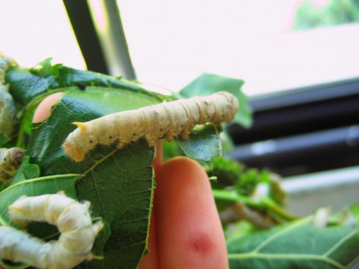
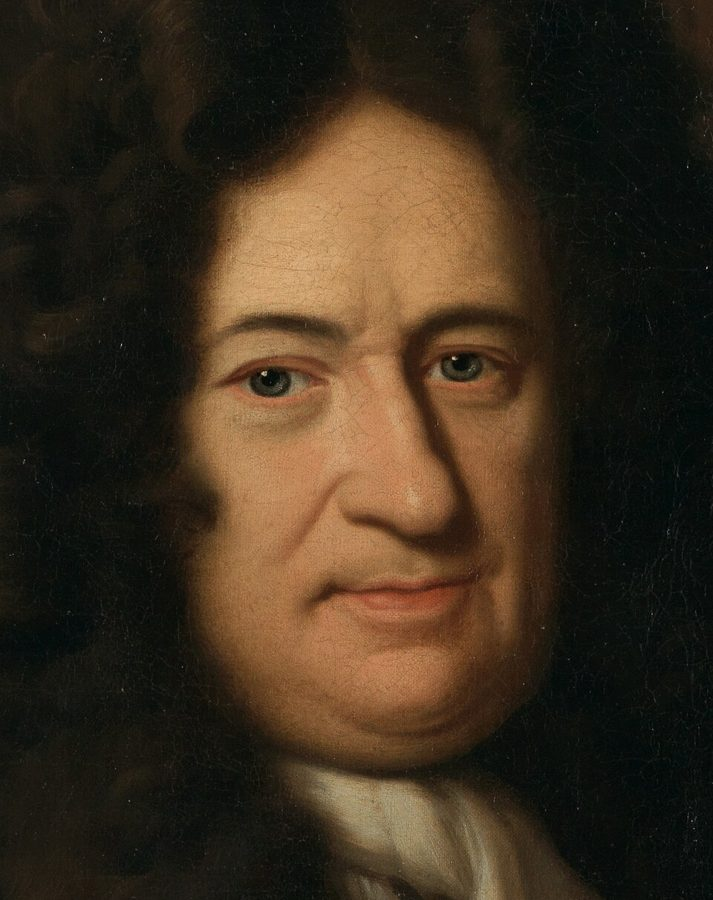
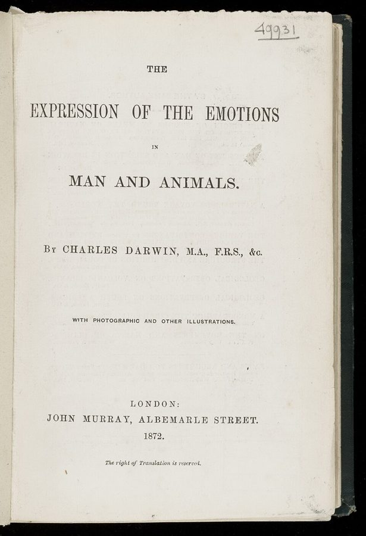

will to permanence
… longings, of our will to permanence.
求永久的意志
will to + 名词是「求……的意志」，如 will to live（求生的意志）。下面第 26 段还有一个 will to pessimism。
全书的最后一页，尾声的后两节。Phillips 把达尔文和弗洛伊德两条线索并到一起：先说两人在劝我们放下什么（对永恒的渴望、对完美的执着），再从达尔文笔记本里的一句「习惯的动物」讲到弗洛伊德的症状和自由联想，中间穿插达尔文书里一条宁可饿死也不换树叶的毛毛虫，最后收住全书。读的时候抓两条线：「失去」怎样从坏事变成一门功课，「习惯」怎样成了「理性」的反面。
上一页是尾声的前两节：失去常常是发明的机会（达尔文写不顺的句子、外孙的线轴游戏）；我们自己也在制造遗忘，所以达尔文立下「金科玉律」，反面证据要立刻记下。这一页第 24 段就从这条规矩接着说。第 25 段的人的可完善性呼应序章第 21 段；第 26 段「要蚯蚓，不要传记作者」接回序章第 14 段埋下的两条线索；全书最后一句，落回序章第 17 段说的「与死同在的生命」。
如果失去无处不在，怎样才算「好好地失去」？
读的时候带着这几个问题。不用先找答案，读完回来对照「检查一下理解」。
两节长短悬殊。§3 只有三段，却是全书论点收拢的地方：第 24 段从上一页的「金科玉律」起头，马上转到「好的失去者」，接着连用三个「仿佛」；第 25 段两人分头讲，第 26 段把两条线索并成一句，再用一句改过的名言收住。§4 另起一条线：从达尔文笔记里的「习惯」走到弗洛伊德的「症状」和自由联想，第 31 段转回失去，再引达尔文的毛毛虫，第 34 段用一长段把两人合起来谈，第 35 段收束全书。第 27 段中间插进的那半行诗、第 28 段开头那句「弗洛伊德管习惯叫症状」，读起来会觉得突然跳了：前者是借来的一句，后者是 Phillips 自己搭的桥。
作者落在哪：Phillips 说两人在劝我们做「好的失去者」：放下对永恒和完美的执着，要蚯蚓，不要传记作者。习惯（在弗洛伊德那里叫症状）让人守着过去，自由联想像哀悼一样是放手。全书收在一句话上：他们希望我们不因自己终有一死而过分沮丧，和自己的死一起活。
这一页是原书尾声的第 3–4 节，也是全书的最后两节。原书没有小标题，只在节与节之间空一行；粗体的节名是本站起的，斜体是这一节第一段开头的几个词，在电子书里搜它就能跳过去。读完打个勾。
先把这一页用到、作者默认你懂的几个概念讲一遍。讲的是概念本身，作者拿它做什么，读原书时自己看。
日常的意思是久而久之养成、不假思索就会做的事。19 世纪的达尔文和不少同时代人相信，反复做的动作会变成习惯，习惯还能遗传给后代；《人和动物的感情表达》（1872）讲表情的第一条原则就叫「有用的联想习惯」。后天习惯能遗传，今天的遗传学不接受。心理学里，William James 1890 年说习惯是「社会巨大的飞轮」：让人省力，也把人固定在老路上。今天的研究把习惯看成由熟悉的情境自动触发的行为，和有意识地追求目标是两套机制。打个比方：习惯像缓存，省掉每次重算；环境一变，缓存里的就成了过期数据。

在这一页：第 27 段从达尔文笔记里的「习惯的动物」讲起；第 32–34 段用《感情表达》里的毛毛虫再讲一次。
医学里，症状是病人自己感到的异常，比如头痛、失眠，医生据此推断背后的病。弗洛伊德给神经症的症状加了一层意思：它不只是病的表现，本身有意义。强迫性的洗手、查不出原因的瘫痪，在他看来是一个被压抑的愿望和压抑它的力量之间的妥协（妥协形成，Kompromissbildung）：愿望换个样子露面，又不至于被认出来。所以症状会一再重复，病人往往离不开它。打个比方：一段绕开旧 bug 的补丁，问题没修好，每次运行都要绕一遍。美国的精神病学诊断手册（DSM）从 1980 年的第三版起，力求按可观察的症状分类、不预设成因；「症状有隐藏的含义」这一说，在精神分析之外很少得到实证支持。
在这一页：第 28 段开头，Phillips 把达尔文的「习惯」和弗洛伊德的「症状」对上；第 34 段的「强迫症的人」也接着这层意思。
弗洛伊德在 1890 年代逐步定下的治疗方法。他起初用催眠，后来改成按着病人的额头、催他「想起来」；最后只请病人把脑子里冒出来的一切照实说出来，不挑选，不因为「不重要」「不相干」「没意思」而略过。这后来被称为精神分析的「基本规则」。背后的设想是：念头不是随便冒出来的，想跳过的那一句往往最要紧。打个比方：排查 bug 时不预先过滤日志，你以为无关而滤掉的那一行，常常就是线索。别和 19 世纪心理学的「联想主义」（观念因为一起出现而连在一起）混为一谈，虽然用的是同一个词。今天它仍是精神分析治疗的基本做法；主流的心理治疗（如认知行为疗法）不靠它。
在这一页：第 28–30 段。Phillips 引《自传研究》里弗洛伊德对这条规则的说明，再拿它和习惯、哀悼对照。
按在书里出现的顺序排，标题前是节号。作品只讲到读懂这一页需要的程度。
《梦的解析》（Die Traumdeutung）是弗洛伊德的第一部大书，1899 年 11 月出版，版权页印的是 1900 年。第 25 段引的是全书最后一章里的一句：无意识是真正的心理实在，和外部世界一样不为我们所知（德文原文见下面「原典」）。Phillips 把死亡驱力叫作 fiction（虚构），把无意识叫作 supreme fiction（最高虚构）。后一个说法借自美国诗人 Wallace Stevens 的长诗《关于最高虚构的笔记》（Notes Toward a Supreme Fiction，1942）；Stevens 在序章第 15 段出现过。在 Phillips 的转述里，对弗洛伊德来说，一个人一生的谜，最能被这两个「虚构」抓住；可以这样读：它们是无法直接证实、却离不开的设想。

德国哲学家莱布尼茨（Gottfried Wilhelm Leibniz，1646–1716）在《神义论》（1710）里论证：上帝在无数可能的世界里挑了最好的一个，所以世上的恶也是这个最好安排的一部分。伏尔泰（Voltaire）1759 年的小说《老实人》（Candide）让家庭教师邦葛罗斯（Pangloss）在一场又一场灾难里念叨这句话，把它变成了笑柄。第 26 段最后一句没有点名，用的就是这个说法，只换了一个前提：不是在许多可能的世界里挑，而是只有一个世界可能。怎么读，见下面「值得停下来的句子」。
达尔文从小猎犬号回来后记了一系列私人笔记本，按字母编号：B 到 E 讲物种演变，M 和 N 讲人的心智、本能和表情。笔记本 N 记于 1838 年 10 月到 1839 年，第 27 段那句「习惯的动物」就在里面，夹在达尔文读 Algernon Wells 牧师 1834 年一篇讲动物本能的演讲时做的笔记中间（原文见下面「原典」）。M、N 两本达尔文生前没有发表，1974 年才完整收进 Howard Gruber 的《Darwin on Man》出版。作者拿这一句开头，把「习惯」和「理性」对立起来。
第 27 段讲「变化」时，插进了美国诗人 Jarrell 的半行诗。它出自《孩子们在图书馆里挑书》（Children Selecting Books in a Library）的最后一行，原诗里 CHANGE 全部大写，说变化为一切「不自恋」的东西所珍爱。Phillips 借这半行接着说：变化本身没有好坏，总等着被我们说成损失、进步、目的或浪费。
德文原名 Selbstdarstellung（自述），1925 年收在 L. R. Grote 编的一套医学家自述丛书的第 4 卷里，美国 1927 年出了英译。书里引的是 Strachey 的英译。弗洛伊德在这篇里回顾精神分析的来历；第 29 段引的是讲技术变化的一段：从催促病人回忆，改成请他自由联想（德文原文见下面「原典」）。Phillips 拿这段话说明，自由联想要病人放下什么。
第 31 段的括号里说，两人都失去了最疼爱的女儿，没有点名。达尔文的长女 Annie（Anne Elizabeth Darwin，1841–1851）十岁时在 Malvern 病死，达尔文一周后写了一篇纪念她的短文，在给亲戚 William Darwin Fox 的信里说她是「我最疼爱的孩子」。弗洛伊德的女儿 Sophie（1893–1920）嫁到汉堡，1920 年 1 月得流感并发肺炎去世，26 岁；上一页线轴游戏里那个孩子，就是她的儿子。Phillips 只提了这一句，没有展开。

达尔文在《人类的由来》（1871）之后第二年出版的书，讨论人和动物的表情从哪里来，书里用了一批照片做插图。第 1 章提出三条原则，第一条是「有用的联想习惯」：某些动作起初对应付某种心境有用，做多了成为习惯，还会遗传，到后来用不着时也会做出来。第 33 段的毛毛虫就在这一章，是达尔文举的「天生的倾向也要靠个体养成一点习惯」的例子之一。Phillips 拿它说：养活我们的习惯，也可能要我们的命。
Phillips 引原作者时常常只引半句、跳着引，弗洛伊德引的又是有版权的英译。下面把他这一页靠着的几段原文整段摆出来：达尔文的英文原文、弗洛伊德的德文原文（两人分别在 1882、1939 年去世，原文早已是公有领域），配本站从原文译的全译；省略处用 …。
Phillips 引了最后一句的前半。下面是这句话和它前面的几句。
Die Rückkehr von der Überschätzung der Bewußtseinseigenschaft wird zur unerläßlichen Vorbedingung für jede richtige Einsicht in den Hergang des Psychischen. Das Unbewußte muß nach dem Ausdrucke von Lipps als allgemeine Basis des psychischen Lebens angenommen werden. Das Unbewußte ist der größere Kreis, der den kleineren des Bewußten in sich einschließt; alles Bewußte hat eine unbewußte Vorstufe, während das Unbewußte auf dieser Stufe stehen bleiben und doch den vollen Wert einer psychischen Leistung beanspruchen kann. Das Unbewußte ist das eigentlich reale Psychische, uns nach seiner inneren Natur so unbekannt wie das Reale der Außenwelt, und uns durch die Daten des Bewußtseins ebenso unvollständig gegeben wie die Außenwelt durch die Angaben unserer Sinnesorgane.
本站译：不再高估「有意识」这一属性，是正确认识心理过程的必要前提。用 Lipps 的话说，必须把无意识当作心理生活的一般基础。无意识是较大的那个圆，把意识这个较小的圆包在里面；一切有意识的东西都有一个无意识的前阶段，而无意识的东西可以停留在这个阶段，却仍然算得上完整的心理活动。无意识才是真正实在的心理之物：就它的内在本性而言，它和外部世界的实在一样不为我们所知；它通过意识的材料呈现给我们，和外部世界通过感官的报告呈现给我们一样，都是不完整的。
Phillips 引到「和外部世界一样不为我们所知」为止。后半句说的是「不完整地给出」：无意识和外部世界一样，只能透过不完整的材料去认识，并没有说无从认识。原文从 uns nach seiner inneren Natur 起加了着重。
Phillips 在第 27 段开头引了后半句。这几行是达尔文读 Wells 牧师一篇讲动物本能的演讲时记的笔记。
Animals may be called “creatures of instinct” with some slight dash of reason so men are called “creatures of reason,” more appropriately they would be “creatures of habit.”
本站译：动物可以叫作「本能的动物」，带一点点理性；同样，人被叫作「理性的动物」，更恰当的叫法是「习惯的动物」。
Phillips 没引前半句：动物也带一点理性，人和动物在这里只差程度。这一行前面标着 p. 20，是 Wells 讲稿的页码，引号里的说法哪些出自 Wells，笔记上分不清。Phillips 说是 1839 年，笔记本 N 记于 1838 年秋到 1839 年。
Phillips 在第 28–29 段引了这段话的英译，从 Instead of urging 起。下面是整段德文原文，前两句交代自由联想取代的是什么。
Die zuerst geübte Überwindung des Widerstandes durch Drängen und Versichern war unentbehrlich gewesen, um dem Arzt die ersten Orientierungen in dem, was er zu erwarten hatte, zu verschaffen. Auf die Dauer war sie aber für beide Teile zu anstrengend und schien nicht frei von gewissen naheliegenden Bedenken. Sie wurde also von einer anderen Methode abgelöst, welche in gewissem Sinne ihr Gegensatz war. Anstatt den Patienten anzutreiben, etwas zu einem bestimmten Thema zu sagen, forderte man ihn jetzt auf, sich der freien „Assoziation“ zu überlassen, d. h. zu sagen, was immer ihm in den Sinn kam, wenn er sich jeder bewußten Zielvorstellung enthielt. Nur mußte er sich dazu verpflichten, auch wirklich alles mitzuteilen, was ihm seine Selbstwahrnehmung ergab, und den kritischen Einwendungen nicht nachzugeben, die einzelne Einfälle mit den Motivierungen beseitigen wollten, sie seien nicht wichtig genug, gehörten nicht dazu oder seien überhaupt ganz unsinnig.
本站译：起初靠催促和担保来克服阻抗，这在当时必不可少，医生要靠它先摸清自己会碰到什么。但长此以往，这对双方都太吃力，而且看来免不了招来一些显而易见的疑虑。于是它被另一种方法取代，这种方法在某种意义上正是它的反面。不再催病人就某个题目说点什么，而是请他把自己交给自由「联想」，也就是放下一切有意识的目标，想到什么就说什么。只是他得答应：真的把自己觉察到的一切都说出来，不向那些挑剔的反对让步，它们想以「不够重要」「不相干」「根本毫无意义」为由，把某些念头撇开。
德文是 forderte man ihn auf（人们请他），主语是无人称的 man，书里的英译作 I now asked him。Phillips 第 30 段说 abandoning 和 binding 听起来像一种性的做法；德文这两处是 sich überlassen（把自己交给）和 sich verpflichten（答应、承担义务），verpflichten 没有英文 bind 那层「捆住」的字面意思。
Phillips 在第 32–33 段引了这段的第一句和毛毛虫那一句，中间用省略号跳过；最后一句在达尔文的书里是下一段的开头。
When there exists an inherited or instinctive tendency to the performance of an action, or an inherited taste for certain kinds of food, some degree of habit in the individual is often or generally requisite. We find this in the paces of the horse, and to a certain extent in the pointing of dogs; although some young dogs point excellently the first time they are taken out, yet they often associate the proper inherited attitude with a wrong odour, and even with eyesight. I have heard it asserted that if a calf be allowed to suck its mother only once, it is much more difficult afterwards to rear it by hand. … Caterpillars which have been fed on the leaves of one kind of tree, have been known to perish from hunger rather than to eat the leaves of another tree, although this afforded them their proper food, under a state of nature; … and so it is in many other cases.
The power of Association is admitted by everyone.
本站译：一个动作有了遗传的或本能的倾向，或者对某几种食物有了遗传的口味，个体往往或通常还需要一定程度的习惯。马的步法里看得到这一点，狗的指示动作里也有几分：有些小狗第一次被带出去打猎，就指得非常好，可它们常常把那个遗传来的正确姿势和不对的气味，甚至和眼睛看到的东西连在一起。我听人说过，小牛只要让它吸过一次母牛的奶，以后再用手喂养就难得多。……有人见过这样的事：吃惯了某一种树的叶子的毛毛虫，宁可饿死，也不吃另一种树的叶子，尽管在自然状态下那正是它们该吃的食物；……许多别的情形也是这样。
联想的力量，人人都承认。
Phillips 跳过了马、猎犬、小牛三个例子。最后一句是下一段的开头，那一段接着引心理学家 Bain 讲「联想」：一起出现的动作和感觉会连在一起。这个词，正是弗洛伊德「自由联想」的那个词。省略号处原书是脚注号，脚注说毛毛虫的出处见他 1868 年的《动物和植物在家养下的变异》。
你用 Kindle，单个生词长按就能查，这里只收词典帮不上的：Phillips 的悖论和警句，每个词都认识、合起来拐了弯的说法，英式口语和学术腔，典故和双关。斜体小字是原句里连续的几个词，错字照电子书原样，搜它就能跳到那里。
读不通的扫描错字和标点：
the worm and not the biographer. The only world that is possible must be the best of all possible worlds.— §3 第 26 段。本站译：要蚯蚓，不要传记作者。唯一可能的世界，一定是所有可能世界中最好的。
前半句是全书两条线索的合并：蚯蚓默默消化、掩埋，不求被记住；传记作者自以为能从外面把一个人的一生说完。后半句改了莱布尼茨的名言。莱布尼茨的「最好」是上帝在许多可能里挑出来的；Phillips 说只有一个世界可能，那「最好」就不再是比较的结果，而是放弃比较：没有别处可去，也就没有更好的世界可以拿来嫌弃这一个。它听上去像邦葛罗斯式的笑话，却可以当真读；判断落在 only 和 must 上。
They want us, in short, not to be unduly dismayed by our mortality – to live with our own deaths.— §4 第 35 段。本站译：总之，他们希望我们不要因为自己终有一死而过分沮丧，学会和自己的死一起活。
全书最后一句。先看 unduly（过分地）：不是要人不怕死，而是别被它压垮。再看 live with：它既是「和……住在一起」，又是「容忍、接受」。这呼应序章第 17 段：两人想的不是死后的生命，而是与死同在的生命。全书从凯奇的「苦难刚刚好」开头，在这里落定。
读完这一页的几节再看。下面是作者在这几节里的论点，由本站按论点重新组织，不按原书的顺序；每条上方是依据所在的段落，拿不准就回书里那几段再读一遍。
Phillips 说，两人以各自的方式劝我们必要时放下对人、对观念，最终对自己的依恋。他用一连串「仿佛」提出：我们在生物性的苦之外，又添了渴望不朽、渴望永久的苦；把价值等同于长久，是对证据视而不见。
§3 第 24 段在他读来，两人都认为害我们的是两个错误信念：救赎（和它的世俗版本：完美的幸福、全部的知识、治愈），以及以为能让时间停下。弗洛伊德那边是传记的自负，达尔文那边是超过限度的合作和利他想象。两人要的是现实的乐观：要蚯蚓，不要传记作者。
§3 第 25–26 段从达尔文笔记里「习惯的动物」，Phillips 读出：习惯是适应的证据，但默认未来像过去时就会害人。他说弗洛伊德管习惯叫症状，是靠抓住过去来过现在。毛毛虫宁可饿死也不换叶子，他读成对人的安静反讽。
§4 第 27–28、33–34 段自由联想要病人放下熟悉的念头、想讨人喜欢的心、对「自己是谁」的认定，也许最难的是「总有个题目可说」的想法。Phillips 说这近似哀悼：一个脱离依恋、放出藏着的力量的过程。
§4 第 29–30 段他说两人在写作里不悲痛，表现出好奇的韧性；失去的清单也是幸存的记录。他们不要我们抛弃过去，只要能动起来。最后要我们从自然的角度看自己，又明知自然没有角度：不因终有一死而过分沮丧，和自己的死一起活。
§4 第 31、34–35 段合起来：这两节把全书两条线索并成一句「要蚯蚓，不要传记作者」。Phillips 想让读者带走的是一种对待失去的姿态：不靠永恒和完美安慰自己，改掉守着过去的习惯，放手又不抛弃过去，学会和自己的死一起活。
尾声合起来：尾声从一个悖论起头：在两人那里，死亡的观念让我们不再以为有什么需要被救赎。失去常常是发明的机会：达尔文写不顺的句子逼他把每一句想透，弗洛伊德的外孙把母亲离开变成线轴游戏。Phillips 说，从这两个例子推广，会得出一个悖论：有时我们最苦，是因为不肯受够苦。我们自己也在制造遗忘，所以达尔文要把反面证据立刻记下。后两节收拢：做好的失去者，放下永恒和完美，改掉守着过去的习惯，和自己的死一起活。
读完作者的论点，再看它站不站得住。每一块摆出三样：主流怎么看，作者怎么看，本站的评论。最后一句是本站对这一页的总体判断。
主流看法：今天的丧亲研究不太支持「哀悼就是切断依恋」这个弗洛伊德式的模型。Klass、Silverman 和 Nickman 1996 年的《持续的联结》（Continuing Bonds）认为，很多人好好地走出丧亲，靠的不是和逝者断开，而是和逝者建立一种新的关系。Bonanno 2004 年在《美国心理学家》上的文章指出，经历丧亲或创伤后保持稳定的「复原力」比人们以为的常见。
作者的看法：两人劝我们做好的失去者，必要时放下对人、观念乃至自己的依恋（第 24 段）；自由联想像哀悼，是脱离依恋（第 30 段）。但他也说，两人不要我们放弃过去，过去只能被重新构建（第 34 段）。
本站的评论：作为一种姿态，「好的失去者」有用：不把损失当成对自己的审判，也不靠幻想永恒来躲开它。但「放手」沿用的是弗洛伊德的脱离模型，和今天的研究有出入；倒是第 34 段那句「过去只能被重新构建」更接近「持续的联结」。读的时候，可以把它理解成不被失去压垮，而不是忘掉失去的人。
主流看法：达尔文的长女 Annie 1851 年病死，他一周后写了纪念她的文字，信里称她「我最疼爱的孩子」（达尔文通信项目）。弗洛伊德的女儿 Sophie 1920 年死于流感；1929 年他给朋友 Ludwig Binswanger 写吊唁信，说急性的哀痛会过去，人却会一直得不到安慰、找不到替代，而这正是延续那份爱的唯一方式。
作者的看法：两人都失去过最疼爱的女儿，但在写作里都不悲痛，表现出好奇的韧性，既不咋呼地乐观，也不心安理得地悲观（第 31 段）。
本站的评论：要守住 Phillips 的限定：「在写作里」。他说的是两人写作的姿态，不是两人的生活。弗洛伊德那封信值得和尾声第 17 段对照：《哀悼与忧郁》说哀悼完成后自我重获自由，Phillips 自己就说那句话乐观得不太可信。所以「不悲痛」可以当作一种写作的选择，不必当作两人看淡了失去。
主流看法：今天的心理学把习惯看成由熟悉情境自动触发的行为，大多省力有益；一项日记研究估计，人每天四成多的行为是习惯性的（Wood 等，2002）。精神分析说的症状是冲突的妥协，和日常习惯不是一回事。达尔文相信后天习惯能遗传，今天的遗传学不接受。
作者的看法：习惯是适应的证据，但默认未来像过去时会害人（第 27 段）；弗洛伊德管习惯叫症状（第 28 段）；人也可能爱习惯胜过爱生命（第 34 段）。
本站的评论：这组类比的好处，是把两个领域接上：问题不在习惯本身，而在环境变了人还不肯变，这一点说中了日常经验。弱处是把习惯、症状、偏见、坏科学放进同一个词，抹掉了差别。毛毛虫那段是达尔文讲习惯和遗传的例子，读成对人的反讽，是 Phillips 的读法。
本站的总体看法：这一页最值得带走的，是 Phillips 对两人共同姿态的描述：不靠永恒和完美安慰自己，把失去的清单同时读成幸存的记录。「好的失去者」「习惯即症状」是有启发的类比，不是论证；说到丧亲，今天的研究更看重保持联结。全书最后那句「和自己的死一起活」，可以当作一个邀请，不必当作结论。
先在心里答，再点开。答错的那题，回书里把对应那一节再读一遍。
对不朽、对永久的渴望带来的苦。他用「仿佛」提出：我们把价值等同于长久，好像只有持久的东西才有价值，对一切都会消逝这个事实视而不见。
他说两人促使我们把生看得比死更奇妙：死一定会来，被怀上、出生却是偶然的。conception 在这里是受孕，不是概念。
达尔文一生对蚯蚓的兴趣，和弗洛伊德一生对传记的反感（序章第 14 段）。在这里，蚯蚓代表默默劳作、不求永久，传记作者代表自以为能从外面把人说完的完美主义。
都是靠抓住过去来过现在：默认未来会像过去，对差别视而不见。他也承认，习惯本身是适应的证据。
病人要放下熟悉的念头、想讨人喜欢的心、对自己的认定，也许最难的是「总有个题目可说」的想法。这是一个脱离依恋的过程，Phillips 说它会放出藏着的力量。
他说达尔文那句「许多别的情形也是这样」带着安静的反讽，人也在其中：我们也可能爱自己的习惯胜过爱自己的生命，死守过去。这是 Phillips 的读法，达尔文原文讲的是习惯和遗传。
两人都失去了最疼爱的女儿。所以「不悲痛」说的是写作的姿态：一种好奇的韧性，既不咋呼地乐观，也不心安理得地悲观。
用一句话说这一页，写给一个没读过的人。
想一想：你有没有一个「毛毛虫的习惯」：环境早就变了，你还守着老做法，甚至守到吃亏？要是放下它，你会失去什么，又会得到什么？
读过又忘了，从这里想起来。挑的是这一页最值得记住的场面、原文和说法，不按原书顺序；每条后面是节号，想细看就回书里那一节。全书各页的这一节都收在全书回顾。
一句话：全书的最后一页：Phillips 说达尔文和弗洛伊德劝我们做「好的失去者」，要蚯蚓、不要传记作者，改掉守着过去的习惯，和自己的死一起活。
达尔文写道：吃惯一种树叶的毛毛虫，宁可饿死也不吃别的叶子。Phillips 说，那句「许多别的情形也是这样」里也有我们。
§4全书两条线索并成一句：默默劳作、不求永久的蚯蚓，对自以为能把人说完的传记作者。紧接着一句改过的莱布尼茨：唯一可能的世界，一定是最好的。
§3达尔文 1830 年代末的笔记：人被叫作理性的动物，更恰当的叫法是习惯的动物。Phillips 说，弗洛伊德管习惯叫症状。
§4想到什么说什么，就得放下熟悉的念头、讨好人的心、对自己的认定。Phillips 说这是一种放手，和哀悼一样。
§4死一定会来，出生却是偶然的。Phillips 说两人促使我们把生看得比死更奇妙。
§3全书最后一句：他们希望我们不要因为终有一死而过分沮丧，学会和自己的死一起活。
§4